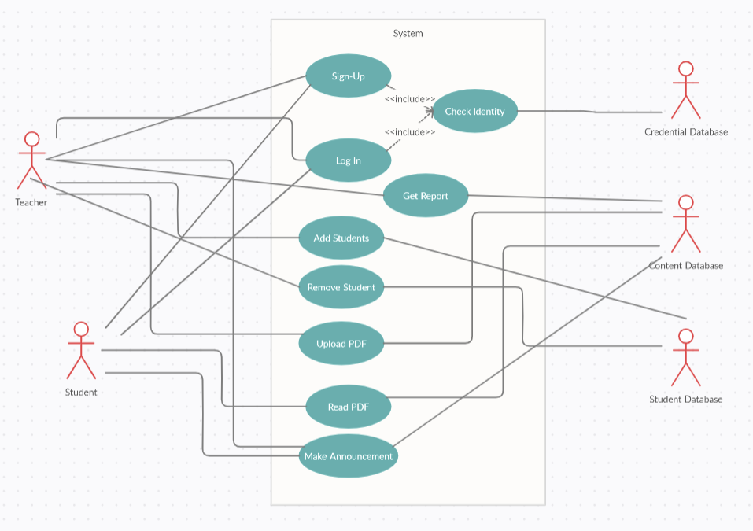
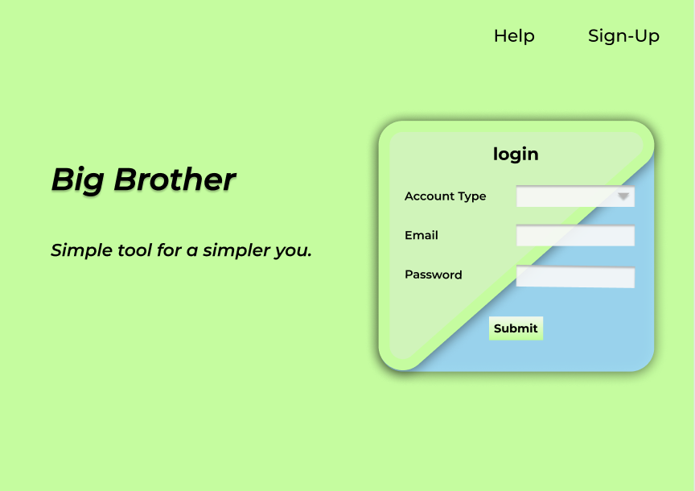
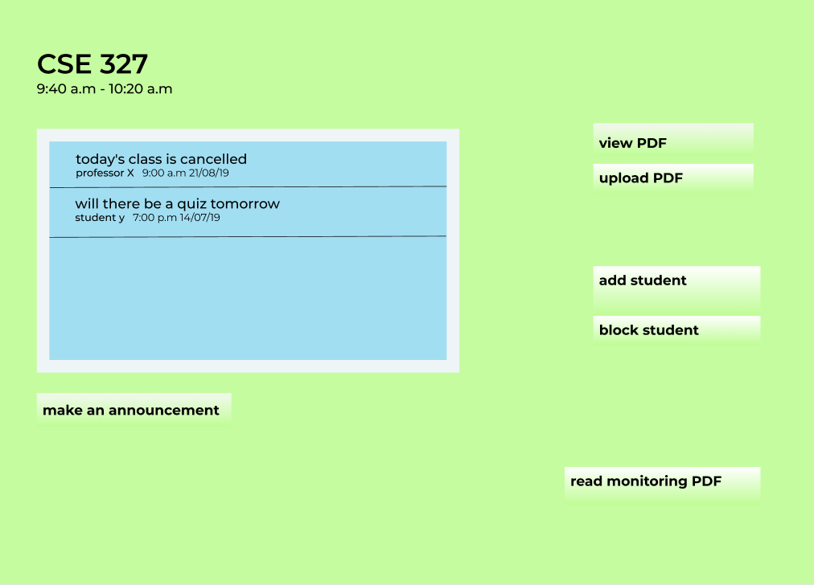
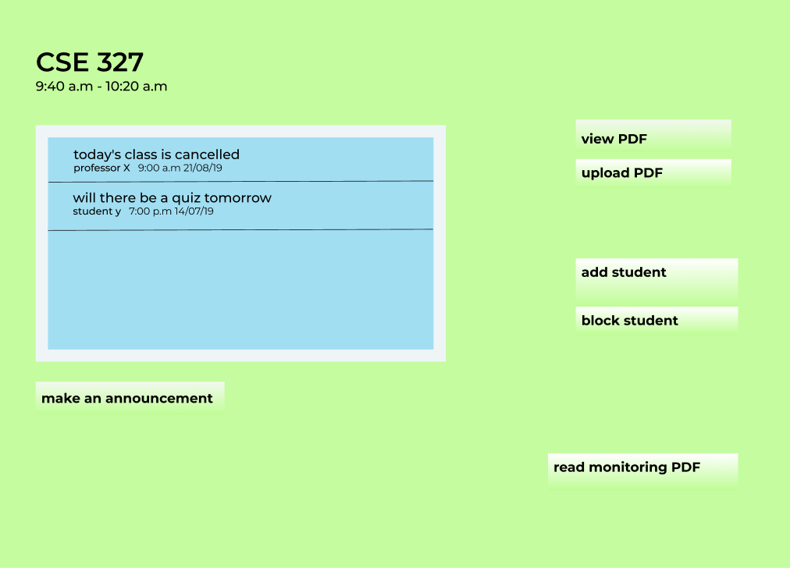

Introduction
-
Purpose
The purpose of this document is to idenitfy the software requirements of our product Big Brother, a student activity monitoring app. This SRS will cover the principal functionalities within our software that are required for a working prototype. We will discuss the user interfaces of the system and its features. Moreover, there will be discussion of the challenges we will encounter in developing this system.
-
Document Conventions
NA
-
Intended Audience and Reading Suggestions
This document is geared towards the developers of the system and our project manager, who will ascertain the validity of our project. Both the users and tester of systems can also use this document to familiarize themselves and recommend any relevent changes. It is susggested that any developers or testers working with the system go through every section, while the typical user of the system can get up and running by reviewing section 2) Overall Description.
-
Product Scope
Big Brother is being developed with the idea of improving educational outcomes in mind. Our system is classroom based where teachers can assign reading materials to the students. In particular, we hope to increase student participation by tracking certain activites within the class. We will capture user data when a student open an assigned PDF through methods such as eye tracking through the webcam and time spent on a particular page.
This will alow the teacher to optimize his/her resources in assisting students. Furthermore, this will permit the teacher to host online exam session without worrying about any misconducts. By utilizing data driven technologies, we will take the next step in educating students.
-
References
NA
Overall Description
-
Product Perspective
The current pandemic has compelled all educational facilities to shift their organiziations from a physical to an online one. Hence, with every passing day the demand for newer online features is rising. Our aim for Big Brother is to create a new self contained product to meet demands for this market.
-
Product Functions
- A teacher can add students to the class.
- A teacher can share materials with the class.
- The system can track student progress.
This is a simple use case diagram designed to show the functionalities:
 -
User Classes and Characteristics
There are two assumed classes of users: teachers and students. Both these classes of users are assumed to be technologically literate. A teacher will have admin or admin like privileges within the system, while students will have limited interaction within the class.
-
Operating Environment
Android application will require any Android based phone. Furthermore, we will require that user be on the latest Android Version (Android Version 11.0).
On desktop, user must use a browser that supports video/audio streaming to access the website. Browser can include Google Chrome, Firefox, or Safari.
Since this is an internet based system, we will require an internet connection. Furthermore, external peripherals such as webcams and microphones are required.
-
Design and Implementation Constraints
The consumers of Big Brother will need to stay connected to the internet. Furthermore, a student could deny access to their webcam making tracking hard. The website must satisfy older iterations of browsers, and must be able to stream video/audio seamlessly across multiple versions of multiple different browsers and Androids.
-
User Documentation
We will be providing a seperate user manual and online help section, to ensure our customers a simpler experience of our system on both our webpage and Android Phone application. The IEEE standard for Software User Documentation format will be followed.
-
Assumptions and dependencies
We plan to use eyetracking/webtracking and AI based solutions through the use of open source API's such as OpenAI and Google Vision. We assume they will be freely available through the life cycle of our system and will not undergo any change in policies. Change in policies, such as the decision to make them private or premium, will affect our service.
External Interface Requirements
-
User Interfaces
This is a tentative look for website and app user interface and is subject to change. But it captures the general idea and purpose of our app. User Interface must be compatible with touch screen.
 

-
Hardware Interfaces
Along side the usual mouse and keyboard for our website, touch screen will used in our Android application. Furthermore, webcam and microphone is a necessity since they will be used to track students.
-
Software Interfaces
The external software interfaces are handled through API's in our system. We need machine learning and data collection API that are provided through open source platforms such as OpenAI and Google Vision. Moreover, when a user makes an announcement in the class, the notification is pushed to a federated email.
Furthermore, we will use federated identity to create user accounts. Thus any one of Facebook or Google account can be accessed by Django Allauth feature.
-
Communication Interfaces
When a user makes a classroom announcement, a notification is pushed through an email. Our system may also be required to collect simple forms.
TBD (More requirement needs to be researched on this point).
System Features
-
Adding Students
- Description and Priority
- Stimulus/Response Sequences
- Functional Requirements
Add Student feature allows the teacher to add students. It is a high priority feature, because, without students, other things are not possible. The teacher needs to log in first to add a student.
NA
Use Case: Add Students
Actors: Teachers
Goal: Add students to class
Description: The teacher needs to add students to the class before they can participate. It also allows the teacher to organise their students with their respective sections/course.
Typical Course of Events
Actor Action System Response 1. The teacher searches for the login page for Big Brother.com 2. The system responds by directing him there. 3. The Teacher logs into his account by using his personal information. 4. The system verifies the information and if correct, allows access by taking him to his account home page. 5. From his list of created classes, the Teacher selects a class he wants to add a student to. 6. The system responds by directing him to that class. 7. The Teacher then clicks on the Add Student button. 8. The system responds by providing a search option. 9. The Teacher then searches the student by email address or student ID. 10. The system displays the choices to the Teacher. 11. The Teacher selects the desired student. 12. The system prompts a confirmation dialogue box with the text “Confirm action?” and “Yes” and “No” options. 13. The Teacher selects “Yes” option 14. The system adds the desired Student to the class. Alternative Course of Events:
Step 4: Wrong login information is given, the system denies access and prompts an error message with a “Retry” button which redirects the Teacher back to the earlier login page, in order to re-input his correct information.
Step 5: The Teacher hasn’t created any classes yet, he will now need to create a class first.
Step 9-10: The Student ID was not found in the search option and the system displays no results.
Step 12-14: The Teacher changes his mind and chooses “No” in the confirmation message. The system redirects the Teacher back to the search options.
-
Making Announcements
- Description and Priority
- Stimulus/Response Sequences
- Functional Requirements
It lets the teacher/student make an announcement in the class. Other participants of the class will see it. It is a medium priority feature. This feature requires log in.
NA
Use Case: Make an announcement
Actors: Teachers/Students
Goal: Making an announcement
Description: A teacher/student can make an announcement in the class by using this feature.
Typical Course of Events
Actor Action System Response 1. The teacher searches for the login page for Big Brother.com 2. The system responds by directing him there. 3. The Teacher/Student logs into his account by using his personal information 4. The system verifies the information and if correct, allows access by taking him to his account home page. 5. The Teacher/Student selects a class he wants to make an announcement in. 6. The system responds by directing him to that class. 7. The Teacher/Student then clicks on the Make Announcement button. 8. The system responds by providing a Text Box option with a “Cancel” button on the button-left and a “Confirm” button on the bottom-right corner. 9. The Teacher/Student then types in the desired text and clicks “Confirm”. 10. The system stores the text, displays the announcement in the class. Alternative Course of Events:
Step 4: if wrong login information is given, the system denies access and prompts an error message with a “Retry” button which redirects the Teacher/Student back to the earlier login page, in order to re-input his correct information.
Step 5: The Teacher hasn’t created any classes yet, he will now need to create a class first.
Step 9-10: The Teacher/Student changes his mind and chooses the “Cancel” option.The system redirects the Teacher/student back to the class.
-
Remove Student
- Description and Priority
- Stimulus/Response Sequences
- Functional Requirements
By using this feature, a teacher can remove a student. That student will no longer be in that class. It is a medium priority feature. It also requires log in.
NA
Use Case: Remove Student
Actors: Teachers
Goal: Remove students from a class
Description: A teacher can remove students by using this feature.
Typical Course of Events
Actor Action System Response 1. The teacher searches for the login page for Big Brother.com 2. The system responds by directing him there. 3. The Teacher logs into his account by using his personal information. 4. The system verifies the information and if correct, allows access by taking him to his account home page. 5. From his list of created classes, the Teacher selects a class he wants to remove a student from. 6. The system responds by directing him to that class. 7. The Teacher then clicks on the Remove Student button. 8. The system responds by providing a search option. 9. The Teacher then searches the student by email address or student ID. 10. The system displays the choices to the Teacher 11. The Teacher selects the desired student. 12. The system prompts a confirmation dialogue box with the text “Confirm action?” and “Yes” and “No” options. 13. The Teacher selects “Yes” option 14. The system removes the desired student from the class. Alternative Course of Events:
Step 4: Wrong login information is given, the system denies access and prompts an error message with a “Retry” button which redirects the Teacher back to the earlier login page, in order to re-input his correct information.
Step 5:The Teacher hasn’t created any classes yet, he will now need to create a class first.
Step 9-10: The Student ID was not found in the search option,as it was invalid and the system displays no results.
Step 12-14: The Teacher changes his mind and chooses “No” in the confirmation message.The system redirects the Teacher back to the search options.
-
Upload PDF
- Description and Priority
- Stimulus/Response Sequences
- Functional Requirements
A teacher can upload PDF files from his/her computer/phone by using this feature. Students of that class will be able to see it. It is a high priority feature. It requires log in.
NA
Use Case: Upload PDF
Actors: Teachers
Goal: Uploading PDF files
Description: The teacher can upload PDF files by using this feature.
Typical Course of Events
Actor Action System Response 1. The teacher searches for the login page for Big Brother.com 2. The system responds by directing him there. 3. The Teacher logs into his account by using his personal information.. 4. The system verifies the information and if correct, allows access by taking him to his account home page. 5. From his list of created classes, the Teacher selects a class he wants to upload a PDF in. 6. The system responds by directing him to that class. 7. The Teacher then clicks on the Upload PDF button. 8. The system responds by opening a dialogue box which allows him to search and pick one of his Local PDF files. 9. The Teacher then searches for the desirable PDF by searching its name or by shuffling through the local files. 10. The system displays the choices to the Teacher. 11. The Teacher selects the desired PDF. 12. The system prompts a confirmation dialogue box with the text “Confirm action?” and “Yes” and “No” options. 13. The Teacher selects “Yes” option 14. The system uploads the desired PDF to the class. Alternative Course of Events:
Step 4:Wrong login information is given, the system denies access and prompts an error message with a “Retry” button which redirects the Teacher back to the earlier login page, in order to re-input his correct information.
Step 5: The Teacher hasn’t created any classes yet, he will now need to create a class first.
Step 9-10: The PDF name was not found in the search option and the system displays no results.
Step 12-14: The Teacher changes his mind and chooses “No” in the confirmation message. The system redirects the Teacher back to the search options.
-
View PDF
- Description and Priority
- Stimulus/Response Sequences
- Functional Requirements
It lets the students see the PDF files that their teacher uploads. The teachers can also see this files. It is a high priority feature which requires log in.
NA
Use Case: View PDF
Actors: Students, teachers
Goal: Viewing PDF files
Description: The students/teachers can view PDF files by using this feature.
Typical Course of Events
Actor Action System Response 1. The teacher searches for the login page for Big Brother.com 2. The system responds by directing him there. 3. The Teacher/Student logs into his account by using his personal information.. 4. The system verifies the information and if correct, allows access by taking him to his account home page. 5. The Teacher/Student selects a class he wants to view a PDF in. 6. The system responds by directing him to that class. 7. The Teacher/Student then clicks on the View PDF button. 8. The system responds by providing a search option. 9. The Teacher/Student then searches for the desirable PDF by searching its name. 10. The system displays the choices to the Teacher/Student. 11. The Teacher/Student selects the desired PDF. 12. The system prompts a confirmation dialogue box with the text “Confirm action?” and “Yes” and “No” options. 13. The Teacher selects “Yes” option 14. The system displays the desired PDF, with a PDF viewer online in the class. Incase of a Student, the system then alerts the Server to start monitoring and recording the individual time spent by the each student reading each PDF and to store this new information in a separate PDF, only a teacher has access to. Alternative Course of Events:
Step 4: Wrong login information is given, the system denies access and prompts an error message with a “Retry” button which redirects the Teacher/Student back to the earlier login page, in order to re-input his correct information.
Step 5: The Teacher hasn’t created any classes yet, he will now need to create a class first.
Step 9-10:The PDF name was not found in the search option and the system displays no results.
Step 12-14:The Teacher/Student changes his mind and chooses “No” in the confirmation message. The system redirects the Teacher/Student back to the search options.
-
Get PDF Monitoring Report
- Description and Priority
- Stimulus/Response Sequences
- Functional Requirements
This will return a report of a PDF file to the teacher. In that report, the teacher will see which student has watched the file and for how much time. It is a high priority feature which requires log in.
NA
Use Case: Get PDF monitoring report
Actors: Teachers
Goal: getting monitoring reports of PDF files
Description: The teacher can get the monitoring report of a PDF file that he/she has been uploaded.
Typical Course of Events
Actor Action System Response 1. The teacher searches for the login page for Big Brother.com 2. The system responds by directing him there. 3. The Teacher logs into his account by using his personal information. 4. The system verifies the information and if correct, allows access by taking him to his account home page. 5. The Teacher selects a class he wants to get a PDF monitoring report from. 6. The system responds by directing him to that class. 7. The Teacher then searches for the desirable PDF by searching its name. 8. The system displays the choices to the Teacher. 9. The Teacher then clicks on a PDF file. 10. The system responds by providing a monitoring report. Alternative Course of Events:
Step 4: Wrong login information is given, the system denies access and prompts an error message with a “Retry” button which redirects the Teacher/Student back to the earlier login page, in order to re-input his correct information.
Step 5: The Teacher hasn’t created any classes yet, he will now need to create a class first.
Step 9-10:The PDF name was not found in the search option and the system displays no results.
Other Nonfunctional Requirements
-
Performance Requirements
The student monitoring feature of the system requires the workstation having at least the following minimum requirements:
- A minimum of 500 MHz processing speed
- 256 MB of available memory
- Webcam/front cam, microphone and speakers
- Broadband internet access
The system also requires the use of Google chrome, Firefox, or Safari as the web browser, and thus requires that our user can run any one of these browser comfortably.
-
Safety Requirements
- All users are responsible for securing a backup of any uploaded data/content to the system.
- The user is responsible for content uploaded. The teacher of a classroom must make sure no damaging, explicit, or inflammatory material makes their way into the classroom.
- The teacher must make sure no cyber-bullying takes place between the students.
-
Security Requirements
- An user account must be secure, and no unauthorized actors may gain access to the classroom.
- Communication channel must be secure. No loss of data or privacy must occur when users are sharing video/audio with the class.
- Data uploaded must be secure.
- User information from the class must not be accessible by anyone else outside the class
- The user is responsible for maintaining their user account. Action must be taken by the user to prevent their account from being compromised.
-
Software Quality Attributes
Our software will undergo unit testing to verify correctness before any feature goes live. We aim to make our software modular with the help OOP practices, so that it yields reusability factor, testing ease, and maintainability. All of this will result in a codebase that is robust, reliable, and flexible.
-
Business Rules
NA
Other Requirements
NA